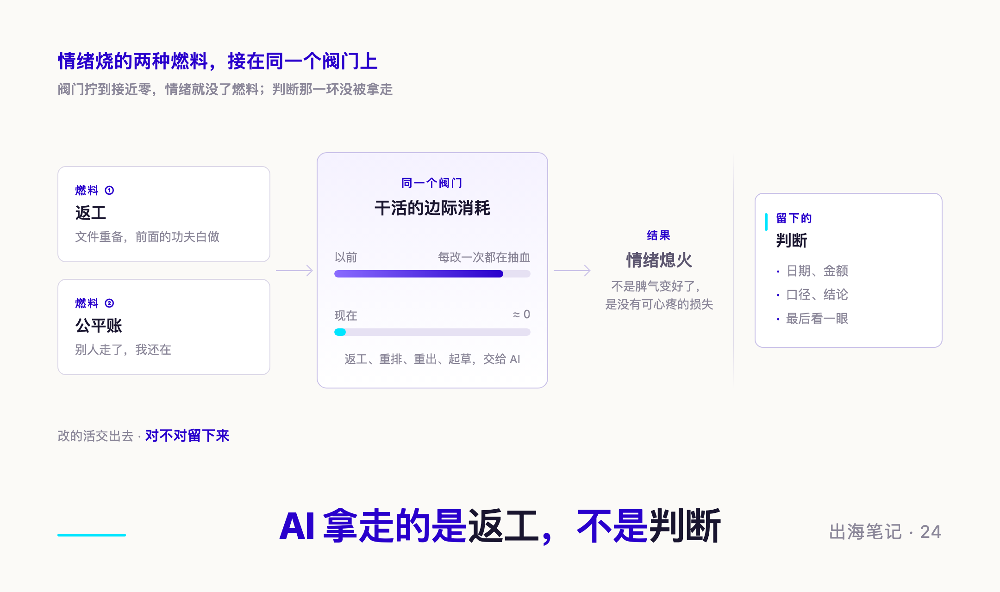
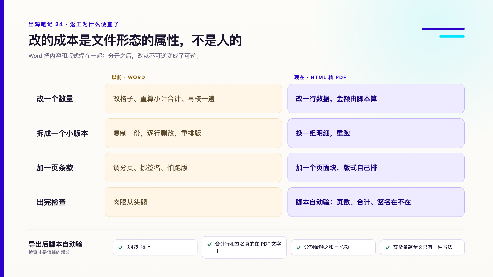
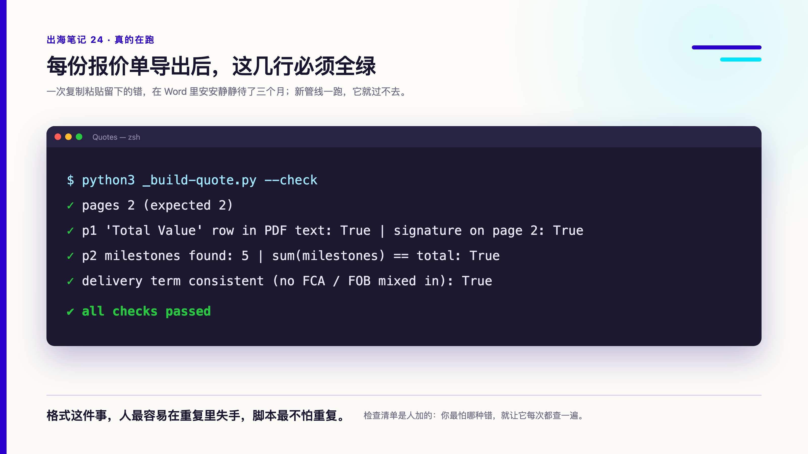
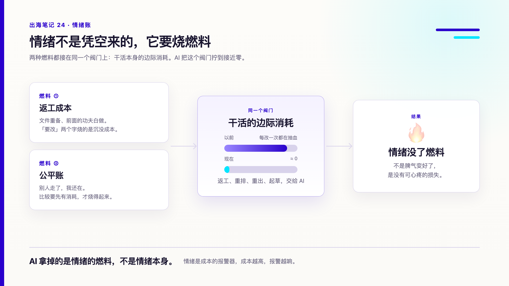
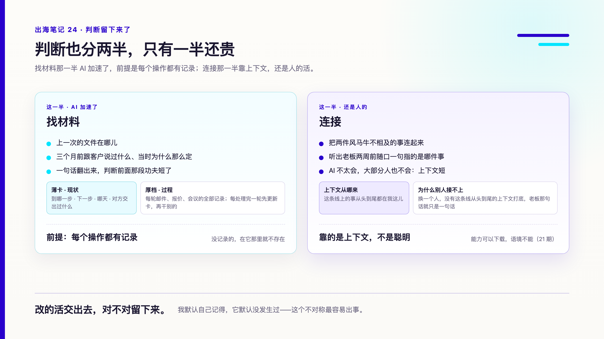

序：一单 ATA 回程，改了三次
这周一，一单展会设备的 ATA 回程，要从海外发回国内。
物流商第一次把我们的快递账号当成了运单号填进去，改。改完发现单号引用没填，又补。补完傍晚接到电话：当天做不完，要重新申请，运单号会换。
换以前，这个电话会让我烦一个晚上。授权书要重出，海关那边要再发一封更正，前面两轮的功夫等于白做。
这次我的反应是：改就改呗。
授权书重出是几分钟的事，更正信 AI 起好草稿，我改两句就能发，旧单作废的确认也顺手写进了同一封信。整件事没有留下任何情绪。
我后来想了一下，变的不是我的脾气。是情绪烧的那两种燃料，被抽走了。
一、情绪的第一种燃料：返工
对方说一句「要改」，让人烦的其实是背后那笔返工成本：文件要重新准备，前面花的时间变成沉没成本，而这些成本全落在执行的人身上。
情绪是成本的报警器。成本越高，报警越响。
AI 接手之后，返工成本接近零。同样一句「要改」，现在只是一条新信息，没有可心疼的损失。
AI 拿掉的是情绪的燃料，不是情绪本身。
第二天还有一个例子。一位客户发来消息，想把之前的报价拆成一个小一点的版本，顺便看看分期怎么付。原报价是几个月前用 Word 做的。我用现在的报价单管线重出了一份，两页，明细一页，付款和条款一页。
出到一半，我问对方有一项配套要不要留着。对方先说应该不用，我说原来的报价里是有的，不需要我就去掉。对方想了想，最后还是要了。
放在以前，这种来回会让我心里嘀咕一句。现在它只是改一个数字、重跑一次。
同一周还有一件小事。展会主办方的参展系统要上传产品图，规定图片必须大于 1MB。第一次传，被退回；换了一张，又被退回。以前我会对着这个规定生一会儿闷气，这次只是让 AI 按要求重新导出一张大一点的，传上去，过了。
返工成本变低以后，我做事的顺序也变了。以前为了少返工，我会先把话问死再动手：要几套、含不含什么、哪天要，全部确认完才开第一个文件，因为每一次推倒重来都很贵。现在我会先动手，边做边问。上面那个「要不要留着」，就是出到一半才问的。对方的答案变了，我也不用心疼。
能先动手，是因为不怕改。
二、返工为什么便宜了：文档的形态变了
返工成本能降到接近零，是因为文档的形态变了，AI 手快只是其次。
现在我手上几乎所有对外的文件，报价单、形式发票、装箱单、授权书、产品彩页，连展台的画面，源头都是一份 HTML。内容是内容，样式是样式，最后用浏览器导出成 PDF。
改的成本是文件形态的属性，不是人的属性。Word 把内容和版式焊在一起，改内容就得重排版式；分开之后，改就从不可逆变成了可逆。
以前用 Word 做报价单，加一行减一行要挑半天：表格多一行，下面的段落被顶到第二页，签名孤零零挂在页首；数量改了，小计、合计、分期金额要一格一格重新算；从上一份复制过来的条款，单价、币种、交货地点，哪一处忘了改，只能靠眼睛找；最后导 PDF，再从头翻一遍看有没有跑版。每一步都不难，但每一步都要人盯着。改一次，就是把这些再走一遍。这才是「要改」让人烦的真正原因。
现在是这样：

真正让我放心的是最后一行。每份报价单导出后，脚本会数页数，确认合计行和签名真的出现在 PDF 的文字里而不是被挤出页面，分期金额加起来要等于总额，全文搜一遍交货条款不能两种写法混着出现。
这条检查是真的抓到过东西的。上面那份重出的报价，我回头去翻三个月前的 Word 原版，表头写的交货地点是一个，合计行写的却是另一个。一次复制粘贴留下的错，在文件里安安静静待了三个月，一直没被发现，包括我自己。新管线一跑，它就过不去。

格式这件事，人最容易在重复里失手，脚本最不怕重复。
要试的话，先有一份写死样式的模板，内容单独放，导出和检查写成脚本。检查才是值钱的部分：你最怕哪种错，就让它每次都查一遍。第一份模板会花一点时间，从第二份开始，每一次「要改」都只剩几分钟。
三、情绪的第二种燃料：公平账
还有一种情绪，和返工没关系。
傍晚办公室的人陆续走了，我还开着五六条线：一边对报价，一边改展台画面，一边回物流的邮件。以前到这个点我会开始算账：凭什么是我在这儿。
这笔账和返工不一样。返工烧的是沉没成本，公平账烧的是比较：别人走了，我还在；别人的事做完了，我的事还在长。比较要有燃料才烧得起来，那个燃料是干活本身的消耗。以前每多开一条线，都是在抽血，抽血的时候人会本能地找一个人负责，于是算到谁头上，谁就被我在心里记了一笔。
现在很少算了。不是想通了什么道理，是干活本身不再那么抽血。多开一条线，只是多一个窗口；物流的邮件 AI 起草我看一眼，展台画面改一版是几分钟，报价重跑一次是一行命令。边际消耗低了，比较就没了燃料。
这笔账我没有算清楚，大概也不打算替任何人算清楚。它只是不再刺痛了。这不是解决，是止痛。但对一个一人部门来说，止痛就已经把下班后的那一个小时还给了我。
便宜还有个副作用，在对方那边。我的判断是，对方迟早会感觉到：改不让我烦，他们就会改得更勤，因为「改」在他们那里的价格掉到了零。我的边际消耗是降了，对方会按边际成本给我重新定价。19 期写过，报价单说出的比你想说的多。这一次说出去的是：这个人改东西不要钱。
零是我的成本，不该是对方的价格。改就改呗是心里的话，报价和交期上该怎么算还怎么算。
两种燃料都抽走之后，情绪这笔账差不多归零了。可是还有一笔账，没那么简单。

四、判断留下来了，但判断也变了
写到这里很容易变成一篇 AI 赞歌，所以要把另一半说清楚。
先说我自己的变化。以前返工贵，心疼逼着我看清楚再发；现在不心疼，手就快，最后那一眼最容易被省掉。情绪成本降了，判断那一环的压力反而变大，因为以前有一道天然的刹车，现在没了。
它也确实会错。同一天，AI 在我手里错了两次，两次都是我抓出来的：
- 它把「周一」对成了错的日期，一封要发给客户的信差点挂在错的日子上
- 一笔信用证收款，它只看了两张银行通知就说没有不符点扣费；等开证行的报文到了，几百块的不符点费才露出来
脚本也会错。有一次克隆旧报价单的模板，表头里「交期」那一格忘了替换，新单子差点带着旧交期出去，是在 PDF 里被看出来的。现在表头每一格都进了脚本的检查清单，但清单是我加的，它自己不会想到。
还有一次是我自己差点出错。一笔还款付出去之前，我停下来问了一句：我们真的欠对方这个数吗？翻回群里的记录核对清楚，才付。AI 可以把付款材料准备得整整齐齐，但「该不该付、付多少」这一问，它不会替我问。
这些错没有一个难，但每一个都只能靠人看出来。
不过「判断归人」这句话，也得拆开看。判断不是白来的，它要有时间，还要找得到材料。不是谁都记得上一次的文件在哪儿，三个月前跟客户说过什么，当时为什么那么定。这一半，AI 反而帮了我：每个项目哪怕三个月前的记录，一句话就翻出来，判断前面那段找东西的功夫，比以前短得多。
但这一半有个前提，而且是条硬规矩：每个操作都得记录下来。用 AI 用得不熟的人最容易出的错，就是以为它知道自己做过的某件事。事实上对话一长，它早忘了。没记录的，在它那里就不存在；而我会以为有，因为那件事在我脑子里明明发生过。我默认自己记得，它默认没发生过，这个不对称最容易出事。第二天它把一条我早就定过的规矩，第三次拿出来问我，就是这么来的：那条规矩定在聊天里，没有落进任何一份它会去翻的文件。
记录还得有规律、有分类，不然翻的时候跟没记一样。我们现在每个客户一张卡，薄薄一页，只放现状：到哪一步了、下一步是什么、哪天、对方交出过什么情报；过程全放在另一份厚档里。每处理完一轮邮件，先更新卡，再干别的。AI 翻三个月前的记录能一句话翻出来，靠的是这个，不是它记性好。
所以省下来的那笔成本没有消失，它换了个地方：变成了每做一件事都要落一笔记录的纪律。这笔成本比返工便宜得多，但一天都不能欠。
没降的那一半是连接。把两件风马牛不相及的事连起来，听出老板两周前随口一句指的是哪件事，这个 AI 不太会。它把另一张单子的配件订单写进这个项目给老板看的看板，就是连接错了：两张单子的货在它眼里长得一样，在我眼里一张是主机一张是配件，根本不在一个项目里。大部分人也不会，说白了都是上下文短。我能，是因为这条线上的事从头到尾都在我这儿。21 期写过，能力可以下载，语境不能。

体力和情绪我都外包了，判断还在我手里。这一环一松，消耗不会消失，它会换个形状回来：可能是一封发错日子的信，可能是一个跟老板说错的数字。
怎么验，23 期写过：改得进去不难，难的是证明它改对了。
五、所以现在怎么分工
我现在的分法很简单：
改的活交出去，对不对留下来。
返工、重排、重出、起草，这些是体力，交给 AI，它不会累，也不会委屈。
日期、金额、口径、结论，这些是判断，我自己看最后一眼。不是不信任它，是这一眼本来就是我的活。
这几次翻车，最后都变成了我给自己定的规矩：
- 写「周几」必带日期，并且核一遍那天到底是周几。邮件里的日期，客户会照着挂
- 多个来源的事，等来源到齐再下结论。银行的通知来了一半，就只说「到目前为止」
- 克隆旧文件，每个字段都进检查清单。模板里没被替换的那一格，比新写的错更难发现
规矩都很土，但都是用一次返工换来的。好在现在返工便宜，换得起。
改就改呗。只是改完那一下，还得我来看。
出海笔记，记录一家中国海洋仪器公司出海路上的实操与反思。